Configuração do MoneyLog
Instruções
Onde configurar?
- MoneyLog Cloud:
-
Todas as configurações devem ser colocadas no arquivo
/Apps/MoneyLog Cloud/config.js, que é criado automaticamente. - MoneyLog Beta:
-
Todas as configurações devem ser colocadas no arquivo
config.js. Você deve criá-lo manualmente. - MoneyLog Portable:
- Todas as configurações devem ser alteradas direto no arquivo HTML. Abra-o num editor de textos simples e procure por "User Config".
- MoneyLog Browser:
- Não há como fazer configurações.
Ligar/desligar
As configurações do tipo liga/desliga aceitam S ou N, para dizer sim ou não. Por exemplo:
initFullScreen = N; // Iniciar em Tela Cheia?
Basta trocar o N por S para ligar esta configuração.
Nerds: 0/1 e true/false também funcionam.
Senha de acesso
myPassword
IMPORTANTE: Esta é uma proteção bem simples, que pode ser facilmente quebrada por quem entende de tecnologias web. Use apenas para impedir o acesso casual de familiares ou colegas não-nerds.
Você pode definir uma senha de acesso, para impedir que outras pessoas vejam seus dados.
myPassword = 'abc123';
Esta pode ser uma configuração interessante para se usar somente quando estiver acessando o MoneyLog a partir de um celular:
if (isMobile) {
myPassword = 'abc123';
}
Idioma
lang
Quer mudar o idioma do MoneyLog? É fácil, basta usar esta configuração. Estas são as línguas para as quais ele já foi traduzido:
- Português (
pt) - Inglês (
en) - Espanhol (
es) - Catalão (
ca)
lang = 'pt';
Extrato padrão ao iniciar
reportType
Ao iniciar o MoneyLog, sempre é mostrado o extrato diário. Mas se preferir, você pode configurá-lo para iniciar mostrando outro extrato, como o mensal ou o anual. Use as letras d, m ou y para informar qual extrato será o padrão.
reportType = 'm'; // d, m, y (diário, mensal, anual)
Tela cheia
initFullScreen
Que tal iniciar já no modo Tela Cheia? É aquele em que a barra de ferramentas fica escondida, deixando o extrato sozinho na tela.
initFullScreen = S; // Iniciar em Tela Cheia?
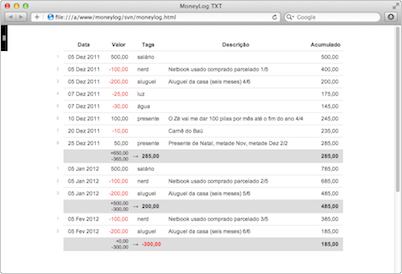
initFullScreen = N; // Iniciar em Tela Cheia?
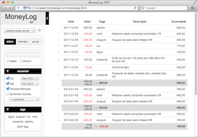
Esta pode ser uma configuração interessante para se usar somente quando estiver acessando o MoneyLog a partir de um celular:
if (isMobile) {
initFullScreen = S;
}
Busca
defaultSearch
Sabe a caixa de pesquisa? Você pode definir uma pesquisa padrão, que será feita toda vez que você carregar o MoneyLog.
defaultSearch = 'alimentação';
Além de palavras, tem uma pesquisa especial que os mais aventureiros podem experimentar. Se você usar o prefixo "v:", a pesquisa será feita somente nos valores. Veja alguns exemplos:
| Pesquisa | Procura por valores… |
|---|---|
v:+ |
positivos |
v:- |
negativos |
v:>50 |
maiores que 50 |
v:<-100 |
menores que -100 |
v:=100 |
iguais a 100 |
v:>=100 |
maiores ou iguais a 100 |
defaultSearch = 'v:>50';
checkNegate
Liga/desliga a opção [X] excluir, da caixa de busca.
Se você costuma usar a caixa de pesquisa mais para excluir lançamentos do que selecioná-los, pode ser uma boa ideia ativar esta configuração.
checkNegate = S; // Marcar a opção [X] excluir?
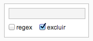
Ou ainda, pode ser útil se usada em conjunto com a configuração anterior. Digamos que ultimamente você não quer saber dos gastos com supermercado. Para que eles não apareçam no extrato ao iniciar o MoneyLog, faça:
// Excluir os lançamentos de supermercado defaultSearch = 'mercado'; checkNegate = S;
Se você usa tags (deveria!), veja também as configurações initExcludedTags e ignoreTags.
checkRegex
Liga/desliga a opção [X] regex, da caixa de busca.
Expressões regulares é algo que quem conhece, não vive sem. Se você se encaixa nesta descrição, tem a obrigação moral de ativar esta configuração :)
checkRegex = S; // Marcar a opção [X] regex?
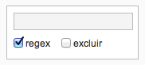
Período - data inicial e final
checkDateFrom
checkDateUntil
Liga/desliga as opções [X] De: e [X] Até:.
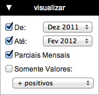
Você pode optar por ativar ou não cada um dos dois seletores de data De: e Até:, quando o MoneyLog se inicia.
Se você gosta de sempre ter todos os seus dados carregados, desde o início dos tempos, basta desativar o primeiro seletor:
checkDateFrom = N; // Marcar a opção [X] De:?
E os lançamentos futuros? Também quer que eles sempre apareçam ao iniciar o MoneyLog, não importando se é mês que vem ou ano que vem? Basta desligar o segundo seletor:
checkDateUntil = N; // Marcar a opção [X] Até:?
Agora, se você quiser carregar somente os últimos seis meses, ou quem sabe no máximo até uns três meses no futuro, veja as duas próximas configurações.
initMonthOffsetFrom
initMonthOffsetUntil
Estas configurações servem para escolher qual será o valor padrão que virá escolhido nos seletores de data De: e Até:.
Coloque um número, positivo ou negativo, que indicará o número de meses à partir da data atual. Use números positivos para meses futuros e negativos para os passados.
Por exemplo, para dizer "três meses atrás", use -3. Para dizer mês seguinte, use 1. Zero significa o mês corrente. Veja alguns exemplos.
Ao iniciar, quero ver somente os três meses mais recentes (os dois que já passaram e o atual):
initMonthOffsetFrom = -2; initMonthOffsetUntil = 0;
Ao iniciar, quero ver somente o mês atual e os três meses futuros:
initMonthOffsetFrom = 0; initMonthOffsetUntil = 3;
Você também pode combinar estas configurações com as duas anteriores, criando intervalos sem limite definido no início ou no final.
Ao iniciar, quero ver tudo, desde o início dos tempos, até o mês atual:
checkDateFrom = N; initMonthOffsetUntil = 0;
Ao iniciar, quero ver só o mês atual e tudo o que estiver pela frente:
initMonthOffsetFrom = 0; checkDateUntil = N;
Parciais mensais
checkMonthPartials
Liga/desliga a opção [X] Parciais Mensais, no extrato diário.
checkMonthPartials = S; // Marcar a opção [X] Parciais Mensais?
Somente valores
Ainda não há uma configuração específica para estes filtros. Mas dê uma olhada na defaultSearch, pois usando o prefixo "v:", você pode emular todos eles.
Widgets
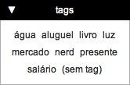 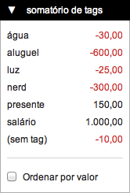
Widgets são aquelas caixinhas abre/fecha ali da barra de ferramentas: visualizar, tags e somatório de tags. Há configurações para dizer se cada um deles vai iniciar aberto ou fechado, ou até removê-los da barra de ferramentas.
O widget "Somatório de Tags" tem sua configuração num formato diferente, que será mostrada no próximo tópico.
initViewWidgetOpen
initTagCloudOpen
Estas configurações definem se as caixas (widgets) da barra de ferramentas vão iniciar abertas ou fechadas.
initViewWidgetOpen = S; // Iniciar com a caixa Visualizar aberta? initTagCloudOpen = S; // Iniciar com a Nuvem de Tags aberta?
Esta pode ser uma configuração interessante para se usar somente quando estiver acessando o MoneyLog a partir de um celular:
// Fechar todas as caixas quando estiver no celular
if (isMobile) {
initViewWidgetOpen = N; // visualizar
initTagCloudOpen = N; // tags
TagSummary.config.opened = N; // somatório de tags
}
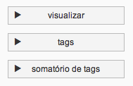
A configuração da caixa "Somatório de Tags" tem um formato diferente, mas o funcionamento é o mesmo. Saiba mais detalhes em TagSummary.config.opened.
showViewWidget
showTagCloud
Se você por algum motivo quiser remover uma caixa da barra de ferramentas, pode usar estas configurações.
showViewWidget = N; // Usar a caixa Visualizar? showTagCloud = N; // Usar a caixa Tags?
Porém, lembre-se que apesar de não estar sendo mostrado, se alguma opção destas caixas estiver ligada, ela será usada. Por exemplo, se você remover a caixa Visualizar, mas os seletores de data De: e Até: estiverem ligados, eles continuarão funcionando.
Consigo imaginar alguns usos para isso. Por exemplo, digamos que você queira liberar somente uma parte de suas finanças para que sua esposa ou seu filho tenham acesso. Você pode definir quais serão as tags que eles poderão ver e usá-las na configuração initSelectedTags. Aí você pode remover a caixa Tags da interface e pronto, eles não poderão mais alterá-las.
De maneira similar, você fazer isso não para restringir, mas para facilitar o uso do MoneyLog. Se sua esposa só quer acompanhar os gastos com roupas e alimentação, e não se importa com os gastos com o carro ou com a manutenção da casa, você pode usar a mesma tática do parágrafo anterior para que no extrato dela só apareçam as tags desejadas:
initSelectedTags = 'roupas alimentação'; showTagCloud = N;
Nota: Mulheres, por favor, não se ofendam com a narrativa centrada no homem. Fiz assim pois são exemplos fáceis de entender pela maioria absolutamente masculina que compõe os usuários do programa. Só isso.
Widget: Somatório de tags
Este widget tem as configurações em um formato diferente, mas elas funcionam de maneira similar às configurações anteriores.
TagSummary.config.active
TagSummary.config.opened
A configuração active vai definir se a caixa vai aparecer ou não na interface, e a configuração opened define se a caixa iniciará aberta ou fechada.
TagSummary.config.active = S; // Usar o Somatório de tags? TagSummary.config.opened = S; // Iniciar com ele já aberto?
Se você não usa nunca o somatório de tags, pode removê-lo da barra de ferramentas:
TagSummary.config.active = N;
Ou quem sabe removê-lo apenas quando estiver no celular, pois o espaço vertical é precioso:
if (isMobile) {
TagSummary.config.active = N;
}
TagSummary.config.showTagless
Além de mostrar o somatório de todas as suas tags, há também um item chamado (sem tag), que representa todos os lançamento que não possuem tags. Caso você queira que este item adicional não apareça no somatório, use:
TagSummary.config.showTagless = N;
TagSummary.config.checkSort
Liga/desliga a opção [X] Ordenar por valor, no somatório de tags.
TagSummary.config.checkSort = S;
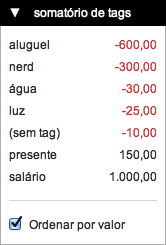
Tabela do extrato
showBalance
Liga/desliga a coluna Acumulado em seus extratos.
Se desligar, esta coluna desaparecerá de todos os extratos: diário, mensal e anual.
showBalance = S;
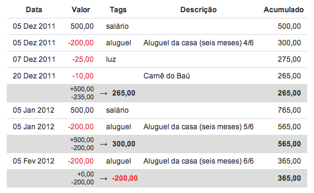
showBalance = N;
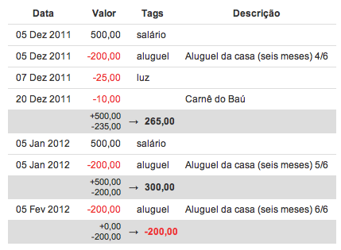
showRowCount
Liga/desliga a numeração das linhas do extrato.
showRowCount = S;
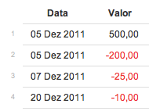
showRowCount = N;
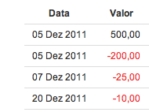
monthlyRowCount
Se ligada, faz a numeração das linhas do extrato ser reiniciada a cada mês.
Note que esta configuração somente será utilizada caso a opção [X] Parciais Mensais esteja ativada.
monthlyRowCount = S; // O número da linha recomeça a cada mês?
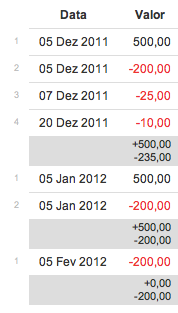
highlightWords
highlightTags
Lista de palavras ou tags que você quer que apareçam em destaque, no extrato diário.
highlightWords = 'XXX parcelado'; // Destacar estas palavras highlightTags = 'luz água'; // Destacar estas tags
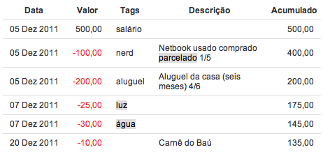
Se você tiver tags com espaços em branco em seu nome, pode usar um array em vez de uma string:
highlightTags = ['luz', 'água', 'tag com espaços'];
sortData.d.index
sortData.m.index
sortData.y.index
Ordem padrão das linhas dos extratos, ao iniciar o MoneyLog.
O comportamento padrão do MoneyLog é sempre ordenar as linhas pela data. Mas você pode mudar isso, escolhendo qual coluna de cada extrato será usada para definir a ordem das linhas. Basta indicar o número da coluna.
| Extrato | Coluna 1 | Coluna 2 | Coluna 3 | Coluna 4 | Coluna 5 |
|---|---|---|---|---|---|
| Diário | Data | Valor | Tags | Descrição | — |
| Mensal | Período | Ganhos | Gastos | Saldo | Acumulado |
| Anual | Período | Ganhos | Gastos | Saldo | Acumulado |
sortData.d.index = 1; // Diário: Ordenar pela coluna (1-4) sortData.m.index = 1; // Mensal: Ordenar pela coluna (1-5) sortData.y.index = 1; // Anual : Ordenar pela coluna (1-5)
sortData.d.rev
sortData.m.rev
sortData.y.rev
Liga/desliga a ordem inversa (descendente) nos extratos.
Com as configurações anteriores você escolhe qual coluna definirá a ordem das linhas de cada extrato. A ordenação é sempre feita de maneira ascendente, ou seja, do menor para o maior.
Com estas configurações você pode definir que o padrão é a ordenação inversa: do maior para o menor.
sortData.d.rev = S; // Diário: Usar a ordem inversa? sortData.m.rev = S; // Mensal: Usar a ordem inversa? sortData.y.rev = S; // Anual : Usar a ordem inversa?
Gráfico de barras
O gráfico de barras aparece sempre depois da tabela dos extratos, sendo uma maneira prática de ter uma visão geral sobre os valores.
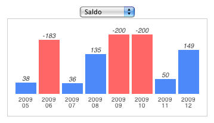
showCharts
Liga/desliga o gráfico de barras, em todos os extratos.
Se você não gosta dos gráficos, ou por algum outro motivo não quiser que eles apareçam, use:
showCharts = N;
Esta pode ser uma configuração interessante para se usar somente quando estiver acessando o MoneyLog a partir de um celular:
if (isMobile) {
showCharts = N;
}
showChartBarLabel
Liga/desliga os números no topo das barras.
Se você desligar esta configuração, terá um gráfico mais limpo, porém menos informativo:
showChartBarLabel = N;
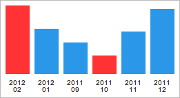
showChartBarLabel = S;
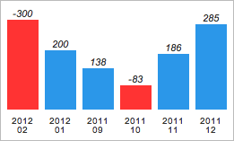
initChartDaily
initChartMonthly
initChartYearly
Item padrão para usar no gráfico de barras, ao iniciar o MoneyLog.
| Item nº | Coluna do extrato |
|---|---|
| 1 | Ganhos |
| 2 | Gastos |
| 3 | Saldo |
| 4 | Acumulado |
initChartDaily = 3; // Mostrar este item no gráfico diário [1-4] initChartMonthly = 1; // Mostrar este item no gráfico mensal [1-4] initChartYearly = 1; // Mostrar este item no gráfico anual [1-4]
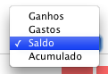
Barra de porcentagem
As barras de porcentagem aparecem nos extratos mensal e anual, na última coluna da direita, nomeada "%".
showMiniBars
Liga/desliga a coluna com as barras de porcentagem nos extratos mensal e anual.
O padrão é ligado, mas se você quiser escondê-la:
showMiniBars = N; // Mostrar a coluna % no mensal/anual?
showMiniBarsLabels
Liga/desliga os números dentro das barras de porcentagem. Se você desligar esta configuração, terá um gráfico mais limpo, porém menos informativo:
showMiniBarsLabels = N;
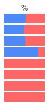
miniBarWidth
Muda a largura das barras de porcentagem. Se você quiser barras maiores ou menores, basta mudar o valor desta configuração. O padrão é 70 (pixels).
miniBarWidth = 150; // Largura da barra de porcentagem
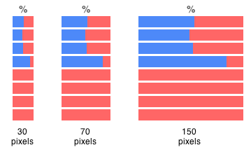
Tags
showTagReport
Liga/desliga o relatório de tags.
O relatório de tags aparece nos extratos mensal e anual, logo após o gráfico de barras.
Se você não usa tags, ele não aparecerá, não precisa se preocupar. Mas se por algum motivo você quiser desligá-lo, faça:
showTagReport = N; // Mostrar o relatório de tags?
Esta pode ser uma configuração interessante para se usar somente quando estiver acessando o MoneyLog a partir de um celular:
if (isMobile) {
showTagReport = N;
}
ignoreTags
Ignora todos os lançamentos que possuem pelo menos uma das tags listadas.
Cada pessoa encontra um uso diferente para as tags e monta seus próprios esquemas. Alguns cadastram lançamentos que devem ficar registrados, mas que não devem entrar na contabilidade nem aparecer nos extratos.
Para este tipo de lançamento, você pode usar esta configuração. Basta listar uma ou mais tags, que todo lançamento que possuir ao menos uma destas tags, será completamente ignorado pelo MoneyLog. A tag ignorada nem aparecerá na nuvem de tags. É como se você não tivesse digitado aqueles lançamentos.
ignoreTags = 'poupança'; // Ignorar lançamentos com estas tags
Ou talvez você queira um extrato limitado quando estiver acessando o MoneyLog de seu celular. Você pode remover várias tags que você não precisa consultar quando estiver na rua, assim seu extrato no telefone fica mais enxuto.
// Não quero saber de custos fixos no celular
if (isMobile) {
ignoreTags = 'aluguel luz água telefone condomínio';
}
Se você tiver tags com espaços em branco em seu nome, pode usar um array em vez de uma string:
ignoreTags = ['poupança', 'tag com espaços'];
Se você precisa ignorar alguma tag ao iniciar, mas quer ter a possibilidade de clicar nela na nuvem de tags para que ela volte a aparecer no extrato, use a configuração initExcludedTags.
initSelectedTags
initExcludedTags
Seleciona ou risca tags automaticamente, ao inicar o MoneyLog.
initSelectedTags = 'água aluguel'; // Iniciar já com estas tags marcadas initExcludedTags = 'livro mercado'; // Iniciar já com estas tags riscadas
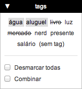
É útil quando você precisa focar em tipos específicos de gastos, durante um certo tempo. Por exemplo, se você vai demorar alguns dias para fazer a contabilidade de uma longa viagem, coloque a tag "viagem" na configuração initSelectedTags. Assim, ao iniciar o MoneyLog, já vão aparecer os gastos da viagem.
De maneira similar, você pode riscar automaticamente as tags que no momento não te interessam. Mas se mudar de ideia, é só clicar na tag ali na nuvem de tags que ela volta a aparecer. Essa é a grande diferença da initExcludedTags para a ignoreTags.
Se você tiver tags com espaços em branco em seu nome, pode usar um array em vez de uma string:
initSelectedTags = ['água', 'aluguel', 'tag com espaços']; initExcludedTags = ['livro', 'mercado', 'outra tag com espaços'];
checkHideRelatedTags
Liga/desliga a opção [X] Esconder as tags relacionadas, que às vezes aparece logo após a tabela do relatório de tags.
checkHideRelatedTags = N ;// Marcar a opção [X] Esconder relacionadas?
Formato da data
showLocaleDate
showLocaleDate = S; // Usar datas regionais
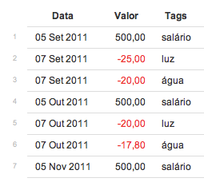
showLocaleDate = N; // Não formatar a data
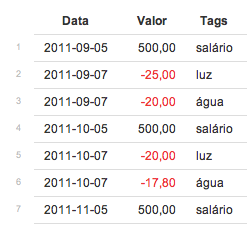
i18nDatabase.pt.dateFormat
i18nDatabase.pt.dateFormatMonth
i18nDatabase.pt.dateFormatYear
Você também pode personalizar o formato regional: usar outros separadores, mudar a ordem ou até escolher exatamente quais componentes mostrar. Além de símbolos, você pode usar as seguintes letras:
| Letra | Significado | Exemplo: 01/09/1999 |
|---|---|---|
| Y | ano com 4 dígitos | 1999 |
| y | ano com 2 dígitos | 99 |
| m | mês | 09 |
| d | dia | 01 |
| B | nome completo do mês | Setembro |
| b | nome do mês com 3 letras | Set |
A data padrão no formato brasileiro é: d/m/Y. O MoneyLog, porém, está usando uma versão mais fácil de ler o mês: d b Y.
Mas fique à vontade para mudar este formato para o que você achar melhor.
i18nDatabase.pt.dateFormat = 'd.m.Y'; // Personalizar formato dia-mês-ano i18nDatabase.pt.dateFormatMonth = 'B Y'; // Personalizar formato mês-ano i18nDatabase.pt.dateFormatYear = 'Y'; // Personalizar formato ano
Atenção: Seus lançamentos continuam sendo informados no formato padrão ANO-MÊS-DIA. Esta configuração afeta apenas como a data será mostrada na tela.
Nerds: Você pode colocar o texto que quiser nestas configurações. Somente as letras especiais serão expandidas, as outras permanecerão inalteradas. Se precisar escapar alguma das letras especiais, já sabe:\Y,\d, …
Ignorar lançamentos antigos e futuros
ignoreDataOlderThan
ignoreDataNewerThan
Se você já usa o MoneyLog há bastante tempo, pode querer simplesmente ignorar os lançamentos antigos, dos anos anteriores. Ou ainda, limitar a visão de anos futuros para poucos anos, sumindo de sua vista com aquelas dezenas de parcelas do financiamento que vai demorar para acabar.
Basta colocar nestas configurações as datas limite, no passado e/ou no futuro, e o MoneyLog vai fingir que não viu nada :)
ignoreDataOlderThan = '2010-01-01'; // Ignorar lançamentos de 2009, 2008... ignoreDataNewerThan = '2020-12-31'; // Ignorar lançamentos após 2020
Note que lançamentos recorrentes também levam em conta esta configuração, então não estranhe se "faltar" algumas parcelas em seu extrato, é porque elas estão fora das datas limite.
Arquivos TXT
No MoneyLog Beta e no MoneyLog Cloud, seus lançamentos são guardados em arquivos de texto simples (TXT), separando bem o programa de seus dados pessoais. Você pode usar somente um arquivo, ou vários, o que achar melhor.
- No MoneyLog Cloud, basta colocar os arquivos TXT dentro da pasta
/Apps/MoneyLog Cloud/txt/de seu Dropbox, que eles serão carregados automaticamente. - No MoneyLog Beta, você deve informar a localização dos arquivos TXT na configuração dataFiles.
dataFiles
Nota: Esta configuração só é usada pelo MoneyLog Beta. Nas outras versões ela é ignorada.
Indique nesta configuração a localização dos arquivos TXT que você quer usar com o MoneyLog Beta. Se eles estiverem em outra pasta, indique o caminho até lá. Veja alguns exemplos:
Separado por ano:
dataFiles = ['2012.txt', '2011.txt', '2010.txt'];
Separado por tipo de conta:
dataFiles = ['dinheiro.txt', 'bb.txt', 'caixa.txt', 'itau.txt'];
Separado por tipo de gasto:
dataFiles = ['geral.txt', 'salario.txt', 'carro.txt', 'escola.txt'];
Por padrão, sempre é carregado o primeiro arquivo da lista (exceto se dataFilesDefault estiver ativa), então coloque por primeiro aquele que você for utilizar mais frequentemente.
Se você colocar um asterisco (*), ele significa TODOS os arquivos ao mesmo tempo. Útil para unificar todos os arquivos em um extrato só.
Se você colocar o asterisco como primeiro item da lista, então o padrão será sempre carregar todos os arquivos. Veja um exemplo:
dataFiles = ['*', 'geral.txt', 'salario.txt', 'carro.txt', 'escola.txt'];
Dicas:
- Aconselho criar uma pasta chamada
txtdentro da sua cópia do repositório e colocar seus arquivos ali. A vantagem é poder atualizar o Git sem preocupação e ainda garantir compatibilidade com o MoneyLog Cloud, que também usa esta pasta. - O arquivo TXT deve ter a codificação UTF-8.
- As quebras de linha podem ser no formato Unix (LF) ou Windows (CR+LF), tanto faz.
dataFilesDefault
- MoneyLog Cloud
-
Se você usa mais de um arquivo TXT, o MoneyLog automaticamente carrega todos os arquivos que encontrar em sua pasta. Com essa configuração você pode mudar isso e carregar somente um arquivo específico no início.
dataFilesDefault = 'carro.txt';
- MoneyLog Beta
-
Ao iniciar, o MoneyLog sempre carregará o primeiro arquivo da lista dataFiles. Para mudar este comportamento e carregar outro item da lista, basta usar esta configuração:
dataFilesDefault = 'carro.txt';
AVANÇADO
O arquivo de configuração config.js, é, acima de tudo, um arquivo JavaScript que é executado junto com o MoneyLog. Ele é uma ferramenta poderosa para modificar ou melhorar o comportamento padrão do MoneyLog.
Veja como é o processo de inicialização:
- Primeiro o script principal
moneylog.jsé lido e carregado. Ele define as funções e as variáveis globais com seus valores padrão. - Depois é executado o
config.js, que além de redefinir variáveis globais (as configurações que vimos até aqui), também pode redefinir funções, criar funções novas e adicionar novos event handlers. - Por fim, a função
init()do script principal é executada (nowindow.onload), e o MoneyLog é inicializado.
O config.js é executado numa posição privilegiada, após a carga mas antes da inicialização. Assim temos o poder de modificar virtualmente qualquer parte do MoneyLog antes de sua inicialização.
Veja alguns exemplos a seguir.
Adicionar códigos CSS
Se você entende de CSS e quer mudar algo na aparência do MoneyLog, tá fácil:
addStyleSheet('mystyle', 'body { color:blue; }');
Esta função adiciona códigos CSS no MoneyLog. Ela cria uma nova tag <style> e dentro dela coloca o texto que você quiser. O primeiro argumento é um nome qualquer, que será o ID da tag e o segundo argumento é uma string com as regras CSS.
Mudar o nome da coluna
// Colunas do extrato diário
//
i18nDatabase.pt.labelsDetailed = [
'Data', 'Valor', 'Tags', 'Descrição', 'Acumulado'
];
// Colunas do extrato mensal/anual
//
i18nDatabase.pt.labelsOverview = [
'Período', 'Entradas', 'Saídas', 'Saldo', 'Acumulado'
];
Mudar o texto "(sem tag)"
// Mudar o texto "(sem tag)" por outra palavra // i18nDatabase.pt.labelTagCloudEmpty = '(VAZIO)';
Configuração highlightRegex
Se você entende de expressões regulares, pode usar esta configuração no lugar da highlightWords, para destacar trechos na coluna Descrição do extrato diário.
// Destacar XXX, números, e @palavra. // highlightRegex = /XXX|\d+|@\w+/gi;
Nota: Se você usar a highlightWords, esta configuração será ignorada. Então certifique-se de usar uma OU outra.
Voltar opções: futuros, somente recentes
// Voltar a usar as opções antigas, da v4: // [X] Somente Recentes: [N meses] // [X] Mostrar Lançamentos Futuros // useLegacyDateFilter = S;
Note que isso fará sumir os seletores de data novos, De: e Até:.
Redefinir uma função
Basta reescrever a função, usando o mesmo nome e o mesmo número de argumentos.
function invalidData(lineno, message) {
alert('Deu pau na linha ' + lineno + ' ' + message);
}
Anexar comandos numa função
showReportOrig = showReport;
showReport = function () {
// Primeiro executa a função original
showReportOrig();
// Agora coloco aqui meu código mágico
foo = 1;
}
Criar um widget
Sabe as caixinhas ali do lado esquerdo? Você pode criar uma também, olha só:
// Cria a caixinha (id, nome, nome da instância)
//
var HelloWorld = new Widget('hello-world', 'Hello World', 'HelloWorld');
// Preenche o conteúdo da caixinha
//
HelloWorld.populate = function () {
this.content.innerHTML = 'Hellooo!';
};
Veja mais exemplos na pasta sample do GitHub.
Criou um widget? Mande pro repositório!
Manipular dados do extrato
O array global reportData guarda os dados do extrato atual, puros, sem formatação:
- data no formato YYYY-MM-DD
- valor como float e não string
- tags como um array de strings
Se você quiser brincar com os dados do extrato, esse é o cara.
Uma ideia simples de fazer é um widget que exporta o extrato pra CSV. Com as informações deste tópico e do anterior, você já consegue algo.
Veja também o código da TagSummary.update no script principal. Ela usa o reportData para encontrar as tags e fazer os cálculos do widget Somatório de tags.
Ah, se quiser brincar com os dados completos, e não somente os do extrato atual, use o array parsedData.
Fim.